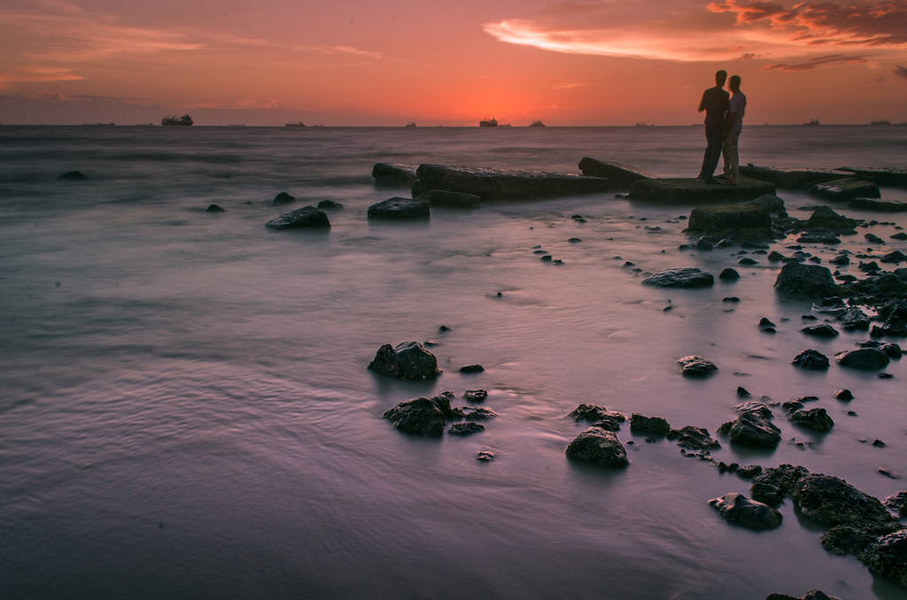

Kuakata in the located in Patuakhali district of Bangladesh and only a few miles away to the south from Khepupara. It is the only sea beach in the world from where both the sunrise and sunset can be observed. This 10km long beach is stretched to the border of the Sundarbans.
from where both the sunrise and sunset can be observed. This 10km long beach is stretched to the border of the Sundarbans.
1. Sagor Konna Resort LtdKuakata , Bangladesh
2. Biswas Sea PalaceKuakata , Bangladesh
3. Hotel Kuakata InnKuakata , Bangladesh
4. Banani PalaceKuakata , Bangladesh
5. Holiday Homes KuakataKuakata , Bangladesh
6. Kuakata Inn Guest HouseKuakata , Bangladesh
7. Ananda BariKuakata , Bangladesh
8. Sky Palace Hotel LtdKuakata , Bangladesh
Direct bus route from Dhaka to Kuakata. “Sakura” costs around 450 Taka (US $8.00). It leaves every night at 10:30 from the Gabtoli Bus terminal near Technical Mor. A direct BRTC bus service is also available from Dhaka to Kuakata that leaves from Sayedabad Bus terminal at night takes 12 hours to reach Kuakata. These buses are clean and comfortable. Dhaka to Barisal by large river boat locally known as “Launch”. They leave from Dhaka Sadarghat launch terminal between 6 to 9 PM. This comfortable overnight journey to Barisal will cost around 500 to 700 per person in a comfortable cabin (double is around 900 to 1400 taka). You will enjoy the unique beauty of Bangladesh Rivers at nighttime during this journey. If you prefer to camp out on the deck it’s cost about 120 taka. You will arrive Barisal around 5 to 7 AM but you can get off the boat when ever you are comfortable to leave. From Barisal you have to take a local bus to Kuakata. It’s just 90 km but it takes about four to five hours because of the five river ferry on the road. Buses stop in almost every major villages but they aren’t particularly clean or punctual, but are cheap. The fare costs hardly 50-80 taka
Located is not so far from Chittagong city, Patenga sea beach is another popular tourist spot in Bangladesh. The beach is very close to the Bangladesh Naval Academy of the Bangladesh Navy and Shah Amanat International Airport. Part of the seashore is built-up with concrete walls, and large blocks of stones have been laid to prevent erosion. Patenga can be visited in any lazy afternoon by a short drive from Chittagong city. After watching the majestic sun set, you can easily come back to your own place.